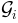
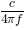

Example of an UWB channel Ray Tracing simulation¶
In the following, all the steps required for going from the description of the radio scene until the calculation of the UWB channel impulse response are described on a simple example.
A ray-tracing simulation is controlled via a configuration file which is stored in the ini directory of the project directory. By default, a default configuration file named default.ini is loaded.
from pylayers.simul.simulem import *
from pylayers.antprop.rays import *
from pylayers.antprop.channel import *
from pylayers.antprop.signature import *
from pylayers.measures.mesuwb import *
import pylayers.util.pyutil as pyu
import pylayers.signal.bsignal as bs
from pylayers.simul.link import *
%matplotlib inline
WARNING:traits.has_traits:DEPRECATED: traits.has_traits.wrapped_class, 'the 'implements' class advisor has been deprecated. Use the 'provides' class decorator.
A first step consists in loading a layout associated with the
simulation. Here the WHERE1.ini layout is chosen along with the
corresponding slabs and materials files matDB.ini and
slabDB.ini.
This layout corresponds to the office building where the first WHERE1 UWB measurement campaign has been conducted.
The layout method loads those in a member layout object L of the simulation object S.
If not already available, the layout associated graphs are built.
S = Simul()
# loading a layout
filestr = 'WHERE1'
S.layout(filestr+'.ini','matDB.ini','slabDB.ini')
S.L.build()
S.L.dumpw()
new file WHERE1.str
The layout display is fully parameterized via the embedded display
dictionnary member of the Layout object.which allows to configure the
showGs() method behavior.
S.L.display['ednodes']=False
S.L.display['nodes']=False
S.L.display['title']='WHERE1 Project Office Measurement Site'
S.L.display['overlay']=False
fig,ax=S.L.showGs()
Adding Coordinates of Transmiting and Receiving points¶
Coordinates of transmitters and receivers for the simulation are stored
in .ini files. The transmitter and the receiver are instances of the
class RadioNode which offers different methods for specifying nodes
positions. The stucture of this .ini file presented below. The node
Id is associated with the 3 coordinates  separated by white
spaces.
separated by white
spaces.
[coordinates]
1 = -12.2724 7.76319999993 1.2
2 = -18.7747 15.1779999998 1.2
3 = -4.14179999998 8.86029999983 1.2
4 = -9.09139999998 15.1899000001 1.2
S.tx = RadioNode(_fileini='w2m1rx.ini',_fileant='defant.vsh3')
S.rx = RadioNode(_fileini='w2m1tx.ini',_fileant='defant.vsh3')
The whole simulation setup can then be displayed using the show method of the Simulation object
fig = plt.figure(figsize=(15,10))
fig,ax = S.show()
Warning : no furniture file loaded
The different object of the simulation can be accessed to get different information. Below i.e the number of transmitter and receiver points.
print 'number of Tx :',len(S.tx.points.keys())
print 'number of rx :',len(S.rx.points.keys())
number of Tx : 302
number of rx : 4
The decomposition of the layout in a set of disjoint cycles is represented below. Not all cycles are rooms.
fig =plt.figure(figsize=(15,10))
fig,ax=S.L.showG('st',fig=fig)
plt.axis('off')
(-40.0, 40.0, 2.0, 18.0)
fig,ax=S.L.showG('st',labels=True,figsize=(15,10))
plt.axis('off')
(-40.0, 40.0, 2.0, 18.0)
Then an existing interaction is picked up and the neighbors in the graph of interactions  are shown
Then a selected sequence of interactions is chosen and the attribute
output of the corresponding edge is shown. The result is the set of
possible next interactions. Notice that associated with each of these
potential output interactions is associated a number
 which indicates the probability of the
corresponding sequence with respect of the full range of incidence
angles. This value is not fully exploited yet in the algorithm which
seek for
which indicates the probability of the
corresponding sequence with respect of the full range of incidence
angles. This value is not fully exploited yet in the algorithm which
seek for
`Signatures <http://pylayers.github.io/pylayers/modules/pylayers.antprop.signature.html>`__
Signatures, rays and propagation and transmission channel¶
# Choose Tx and Rx coordinates
itx=10
irx=2
tx= S.tx.points[itx]
rx= S.rx.points[irx]
tx
array([-24.867 , 12.3097, 1.2 ])
rx
array([-18.7747, 15.178 , 1.2 ])
A signature is a sequence of layout objects (points and segments) which
are involved in a given optical ray, relating the transmiter and the
receiver. The signature is calculated from a layout cycle to an other
layout cycle. This means that it is needed first to retrieve the cycle
number from point coordinates. This is done thanks to the helping
function
`pt2cy <http://pylayers.github.io/pylayers/modules/generated/pylayers.gis.layout.Layout.pt2cy.html>`__,
point to cycle function.
ctx=S.L.pt2cy(tx)
crx=S.L.pt2cy(rx)
print 'tx point belongs to cycle ',ctx
print 'rx point belongs to cycle ',crx
tx point belongs to cycle 6
rx point belongs to cycle 5
Then the signature between the 2 chosen cycles can be calculated. This is done by instantiating a Signature object with a given layout and the 2 cycle number.
The __repr__ of a signature object provides information about the
number of signatures for each number of interactions.
DL=DLink(L=S.L)
DL.a= tx
DL.b= rx
DL.eval(force=['sig','ray','Ct','H'],alg=2015,si_reverb=2,cutoff=2,ra_vectorized=True)
Signatures'> from 6_5_2 saved
Rays'> from 2_2_0 saved
Ctilde'> from 2_0_0 saved
Tchannel'> from 2_0_0_0_0_0_0 saved
(array([ 3.13086158e-05, 3.34105377e-05, 2.74152917e-05, ...,
0.00000000e+00, 0.00000000e+00, 0.00000000e+00]),
array([ 22.44580242, 23.82884904, 25.45219139, ..., 103.49167653,
134.11496383, 134.11496383]))
DL
filename: Links_0_WHERE1.ini.h5
Link Parameters :
------- --------
Layout : WHERE1.ini
Node a
------
position : [-24.867 12.3097 1.2 ]
Antenna : S2R2.sh3
Rotation matrice :
[[ 1. 0. 0.]
[ 0. 1. 0.]
[ 0. 0. 1.]]
Node b
------
position : [-18.7747 15.178 1.2 ]
Antenna : S2R2.sh3
Rotation matrice :
[[ 1. 0. 0.]
[ 0. 1. 0.]
[ 0. 0. 1.]]
Link evaluation information :
-----------------------------
distance : 6.734 m
delay : 22.446 ns
fmin (fGHz) : 2.0
fmax (fGHz) : 11.0
fstep (fGHz) : 0.05
Si = Signatures(S.L,ctx,crx)
fig=plt.figure(figsize=(10,10))
S.L.display['ednodes']=False
DL.Si.show(S.L,fig=fig,nodes=False)
(<matplotlib.figure.Figure at 0x2b8cd4f3ab50>,
<matplotlib.axes.AxesSubplot at 0x2b8cd4f3a550>)
Si.run5(cutoff=2,algo='old')
Si.show(S.L,figsize=(10,10))
(<matplotlib.figure.Figure at 0x2b8cd7589d10>,
<matplotlib.axes.AxesSubplot at 0x2b8ceabaf610>)
#Si.run4(cutoff=5)
Once the signature has been obtained, 2D rays are calculated with the
rays() method of the signature Si. The coordinates of a
transmitter and a receiver should be parameters of the function. r2d
object has a show and show3 method.
plt.figure(figsize=(20,20))
r2d = Si.rays(tx,rx)
S.L.display['ednodes']=False
DL.R
Rays3D
----------
1 / 1 : [0]
2 / 8 : [1 2 3 4 5 6 7 8]
3 / 55 : [ 9 10 11 12 13 14 15 16 17 18 19 20 21 22 23 24 25 26 27 28 29 30 31 32 33
34 35 36 37 38 39 40 41 42 43 44 45 46 47 48 49 50 51 52 53 54 55 56 57 58
59 60 61 62 63]
4 / 167 : [ 64 65 66 67 68 69 70 71 72 73 74 75 76 77 78 79 80 81
82 83 84 85 86 87 88 89 90 91 92 93 94 95 96 97 98 99
100 101 102 103 104 105 106 107 108 109 110 111 112 113 114 115 116 117
118 119 120 121 122 123 124 125 126 127 128 129 130 131 132 133 134 135
136 137 138 139 140 141 142 143 144 145 146 147 148 149 150 151 152 153
154 155 156 157 158 159 160 161 162 163 164 165 166 167 168 169 170 171
172 173 174 175 176 177 178 179 180 181 182 183 184 185 186 187 188 189
190 191 192 193 194 195 196 197 198 199 200 201 202 203 204 205 206 207
208 209 210 211 212 213 214 215 216 217 218 219 220 221 222 223 224 225
226 227 228 229 230]
5 / 312 : [231 232 233 234 235 236 237 238 239 240 241 242 243 244 245 246 247 248
249 250 251 252 253 254 255 256 257 258 259 260 261 262 263 264 265 266
267 268 269 270 271 272 273 274 275 276 277 278 279 280 281 282 283 284
285 286 287 288 289 290 291 292 293 294 295 296 297 298 299 300 301 302
303 304 305 306 307 308 309 310 311 312 313 314 315 316 317 318 319 320
321 322 323 324 325 326 327 328 329 330 331 332 333 334 335 336 337 338
339 340 341 342 343 344 345 346 347 348 349 350 351 352 353 354 355 356
357 358 359 360 361 362 363 364 365 366 367 368 369 370 371 372 373 374
375 376 377 378 379 380 381 382 383 384 385 386 387 388 389 390 391 392
393 394 395 396 397 398 399 400 401 402 403 404 405 406 407 408 409 410
411 412 413 414 415 416 417 418 419 420 421 422 423 424 425 426 427 428
429 430 431 432 433 434 435 436 437 438 439 440 441 442 443 444 445 446
447 448 449 450 451 452 453 454 455 456 457 458 459 460 461 462 463 464
465 466 467 468 469 470 471 472 473 474 475 476 477 478 479 480 481 482
483 484 485 486 487 488 489 490 491 492 493 494 495 496 497 498 499 500
501 502 503 504 505 506 507 508 509 510 511 512 513 514 515 516 517 518
519 520 521 522 523 524 525 526 527 528 529 530 531 532 533 534 535 536
537 538 539 540 541 542]
6 / 320 : [543 544 545 546 547 548 549 550 551 552 553 554 555 556 557 558 559 560
561 562 563 564 565 566 567 568 569 570 571 572 573 574 575 576 577 578
579 580 581 582 583 584 585 586 587 588 589 590 591 592 593 594 595 596
597 598 599 600 601 602 603 604 605 606 607 608 609 610 611 612 613 614
615 616 617 618 619 620 621 622 623 624 625 626 627 628 629 630 631 632
633 634 635 636 637 638 639 640 641 642 643 644 645 646 647 648 649 650
651 652 653 654 655 656 657 658 659 660 661 662 663 664 665 666 667 668
669 670 671 672 673 674 675 676 677 678 679 680 681 682 683 684 685 686
687 688 689 690 691 692 693 694 695 696 697 698 699 700 701 702 703 704
705 706 707 708 709 710 711 712 713 714 715 716 717 718 719 720 721 722
723 724 725 726 727 728 729 730 731 732 733 734 735 736 737 738 739 740
741 742 743 744 745 746 747 748 749 750 751 752 753 754 755 756 757 758
759 760 761 762 763 764 765 766 767 768 769 770 771 772 773 774 775 776
777 778 779 780 781 782 783 784 785 786 787 788 789 790 791 792 793 794
795 796 797 798 799 800 801 802 803 804 805 806 807 808 809 810 811 812
813 814 815 816 817 818 819 820 821 822 823 824 825 826 827 828 829 830
831 832 833 834 835 836 837 838 839 840 841 842 843 844 845 846 847 848
849 850 851 852 853 854 855 856 857 858 859 860 861 862]
7 / 180 : [ 863 864 865 866 867 868 869 870 871 872 873 874 875 876 877
878 879 880 881 882 883 884 885 886 887 888 889 890 891 892
893 894 895 896 897 898 899 900 901 902 903 904 905 906 907
908 909 910 911 912 913 914 915 916 917 918 919 920 921 922
923 924 925 926 927 928 929 930 931 932 933 934 935 936 937
938 939 940 941 942 943 944 945 946 947 948 949 950 951 952
953 954 955 956 957 958 959 960 961 962 963 964 965 966 967
968 969 970 971 972 973 974 975 976 977 978 979 980 981 982
983 984 985 986 987 988 989 990 991 992 993 994 995 996 997
998 999 1000 1001 1002 1003 1004 1005 1006 1007 1008 1009 1010 1011 1012
1013 1014 1015 1016 1017 1018 1019 1020 1021 1022 1023 1024 1025 1026 1027
1028 1029 1030 1031 1032 1033 1034 1035 1036 1037 1038 1039 1040 1041 1042]
8 / 12 : [1043 1044 1045 1046 1047 1048 1049 1050 1051 1052 1053 1054]
-----
ni : 5686
nl : 12427
<matplotlib.figure.Figure at 0x2b8d09140bd0>
r2d
N2Drays : 28
from 782 signatures
#Rays/#Sig: 0.0358056265985
pTx : [-24.867 12.3097 1.2 ]
pRx : [-18.7747 15.178 1.2 ]
1: [[12]]
2: [[ 5 12 12 -277]
[ 12 335 333 12]]
3: [[ 13 12 12 330 5 5 5 4 140 12 12 12 12 -291
-277 -277 -277 -277 -273 -273 -273 -289]
[ 12 5 -277 -277 12 12 -277 5 -269 335 30 335 328 -277
12 12 5 -269 5 -277 -269 -277]
[ 30 12 12 12 335 333 12 12 30 23 335 12 24 12
335 333 12 30 12 12 30 12]]
4: [[ 5]
[ 140]
[-269]
[ 30]]
#r2d.show3(S.L)
Then, the r2d object is transformed into a 3D ray, taking into account the reflection on ceil and floor.
Once the 3D rays are obtained the local basis are determined with the
specialized method
`to3D <http://pylayers.github.io/pylayers/modules/generated/pylayers.antprop.rays.Rays.to3D.html>`__
r3d=r2d.to3D(S.L)
The the local basis of each ray are determined with the specialized
method
`locbas <http://pylayers.github.io/pylayers/modules/generated/pylayers.antprop.rays.Rays.locbas.html>`__
r3d.locbas(S.L)
and the the interaction matrices are filled with the specialized method
`fillinter <http://pylayers.github.io/pylayers/modules/generated/pylayers.antprop.rays.Rays.fillinter.html>`__
r3d.fillinter(S.L)
Below ni is the number of interactions
r3d
Rays3D
----------
1 / 1 : [0]
2 / 6 : [1 2 3 4 5 6]
3 / 32 : [ 7 8 9 10 11 12 13 14 15 16 17 18 19 20 21 22 23 24 25 26 27 28 29 30 31
32 33 34 35 36 37 38]
4 / 53 : [39 40 41 42 43 44 45 46 47 48 49 50 51 52 53 54 55 56 57 58 59 60 61 62 63
64 65 66 67 68 69 70 71 72 73 74 75 76 77 78 79 80 81 82 83 84 85 86 87 88
89 90 91]
5 / 46 : [ 92 93 94 95 96 97 98 99 100 101 102 103 104 105 106 107 108 109
110 111 112 113 114 115 116 117 118 119 120 121 122 123 124 125 126 127
128 129 130 131 132 133 134 135 136 137]
6 / 2 : [138 139]
-----
ni : 563
nl : 1266
Calulating the Propagation Channel¶
The propagation channel is a
`Ctilde <http://pylayers.github.io/pylayers/modules/pylayers.antprop.channel.html>`__
object. This object can be evaluated for different frequency point
thanks to the eval() method with a fGHz array as argument.
S.fGHz
array([ 2. , 2.05, 2.1 , 2.15, 2.2 , 2.25, 2.3 , 2.35,
2.4 , 2.45, 2.5 , 2.55, 2.6 , 2.65, 2.7 , 2.75,
2.8 , 2.85, 2.9 , 2.95, 3. , 3.05, 3.1 , 3.15,
3.2 , 3.25, 3.3 , 3.35, 3.4 , 3.45, 3.5 , 3.55,
3.6 , 3.65, 3.7 , 3.75, 3.8 , 3.85, 3.9 , 3.95,
4. , 4.05, 4.1 , 4.15, 4.2 , 4.25, 4.3 , 4.35,
4.4 , 4.45, 4.5 , 4.55, 4.6 , 4.65, 4.7 , 4.75,
4.8 , 4.85, 4.9 , 4.95, 5. , 5.05, 5.1 , 5.15,
5.2 , 5.25, 5.3 , 5.35, 5.4 , 5.45, 5.5 , 5.55,
5.6 , 5.65, 5.7 , 5.75, 5.8 , 5.85, 5.9 , 5.95,
6. , 6.05, 6.1 , 6.15, 6.2 , 6.25, 6.3 , 6.35,
6.4 , 6.45, 6.5 , 6.55, 6.6 , 6.65, 6.7 , 6.75,
6.8 , 6.85, 6.9 , 6.95, 7. , 7.05, 7.1 , 7.15,
7.2 , 7.25, 7.3 , 7.35, 7.4 , 7.45, 7.5 , 7.55,
7.6 , 7.65, 7.7 , 7.75, 7.8 , 7.85, 7.9 , 7.95,
8. , 8.05, 8.1 , 8.15, 8.2 , 8.25, 8.3 , 8.35,
8.4 , 8.45, 8.5 , 8.55, 8.6 , 8.65, 8.7 , 8.75,
8.8 , 8.85, 8.9 , 8.95, 9. , 9.05, 9.1 , 9.15,
9.2 , 9.25, 9.3 , 9.35, 9.4 , 9.45, 9.5 , 9.55,
9.6 , 9.65, 9.7 , 9.75, 9.8 , 9.85, 9.9 , 9.95,
10. , 10.05, 10.1 , 10.15, 10.2 , 10.25, 10.3 , 10.35,
10.4 , 10.45, 10.5 , 10.55, 10.6 , 10.65, 10.7 , 10.75,
10.8 , 10.85, 10.9 , 10.95, 11. ])
Ct = r3d.eval(fGHz=S.fGHz)
print "fmin : ",S.fGHz.min()
print "fmax : ",S.fGHz.max()
print "Nf : ", len(S.fGHz)
fmin : 2.0
fmax : 11.0
Nf : 181
The energy on each polarization couple of the channel can be obtained
with the
`energy <http://pylayers.github.io/pylayers/modules/generated/pylayers.antprop.channel.Ctilde.energy.html>`__
method. By default this method scaling the channel with the Friis factor
.
type(DL.C)
pylayers.antprop.channel.Ctilde
Ectt,Ecpp,Ectp,Ecpt = DL.C.energy(Friis=True)
Eco = Ectt+Ecpp
Ecross = Ectp+Ecpt
tauns = np.arange(10,180,1)
PL2 = 32.4+20*np.log10(2)+20*np.log10(0.3*tauns)
PL11 = 32.4+20*np.log10(11)+20*np.log10(0.3*tauns)
fig = plt.figure(figsize=(8,8))
plt.semilogx(tauns,-PL2)
plt.semilogx(tauns,-PL11)
plt.semilogx(DL.C.tauk,10*np.log10(Eco),'ob')
plt.semilogx(DL.C.tauk,10*np.log10(Ecross),'or')
plt.xlabel('delay(ns)')
plt.ylabel('path energy (dB)')
plt.legend(('FS 2GHz','FS 11GHz','Co-pol','X-pol'))
axis = plt.axis((0,180,-160,-20))
The multipath doa/dod diagram can be obtained via the method
`doadod <http://pylayers.github.io/pylayers/modules/generated/pylayers.antprop.channel.Ctilde.doadod.html>`__.
The colorbar corresponds to the total energy of the path.
fig = plt.figure(figsize=(8,8))
DL.C.doadod(phi=(-180,180),fig=fig)
(<matplotlib.figure.Figure at 0x2b8d09169790>,
[<matplotlib.axes.AxesSubplot at 0x2b8d09169150>,
<matplotlib.axes.AxesSubplot at 0x2b8d09365c50>])
DL.C.info()
Nfreq : 181
Nray : 1055
shape Ctt : (1055, 181)
shape Ctp : (1055, 181)
shape Cpt : (1055, 181)
shape Cpp : (1055, 181)
Applying a waveform to the transmission channel¶
Once the propagation channel is obtained the transmission channel is
calculated with the method
`prop2tran <http://pylayers.github.io/pylayers/modules/generated/pylayers.antprop.channel.Ctilde.prop2tran.html>`__.
The Friis factor has to be set to False.
DL.C.freq = S.fGHz
sco = DL.C.prop2tran(a='theta',b='theta',Friis=False)
sca = DL.C.prop2tran(a=S.tx.A,b=S.rx.A,Friis=False)
The applied waveform which is here loaded from a measurement file, and compensated for a small time shift. It is important for the latter treatment for the applied waveform to be centered in the middle of the array as it is illustrated below.
print mesdir
/data/WHERE1/measures
wav1 = wvf.Waveform(typ='generic',fcGHz=6,bandGHz=4)
wav1.show()

Finally, the received UWB waveform can be synthesized in applying the waveform to the transmission channel.
ro = sco.applywavB(wav1.sfg)
ra = sca.applywavB(wav1.sfg)
ro.plot(typ=['v'])
plt.xlabel('delay(ns)')
plt.ylabel('voltage (V)')
plt.title('without antenna')
#plt.axis((0,180,-0.006,0.006))
ra.plot(typ=['v'])
plt.xlabel('delay(ns)')
plt.ylabel('voltage (V)')
plt.title('with antenna')
#plt.axis((0,180,-0.1,0.1))
<matplotlib.text.Text at 0x2b8d095b8690>